04 · ROBOTICS & SUSTAINABLE PRODUCT SYSTEMS
Hydroren
A robotic pool cleaner that uses one flow of water to clean, move, and communicate.
Hydroren is a robotic cleaning concept designed around the daily rhythm of a commercial swimming pool. It works after closing, when the pool is empty, and returns to a wall-mounted charging base before swimmers arrive.
The project explores how the water flow created for suction could perform more than one job. The same hydraulic system supports debris collection, brushing, and directional movement, while a hydrocyclone separates particles before they reach a fine filter.

Research · System Design · Industrial Design · Hydraulic Prototyping · Interaction Design
02
One water flow,
several jobs
The system reuses the energy already moving water through the machine.
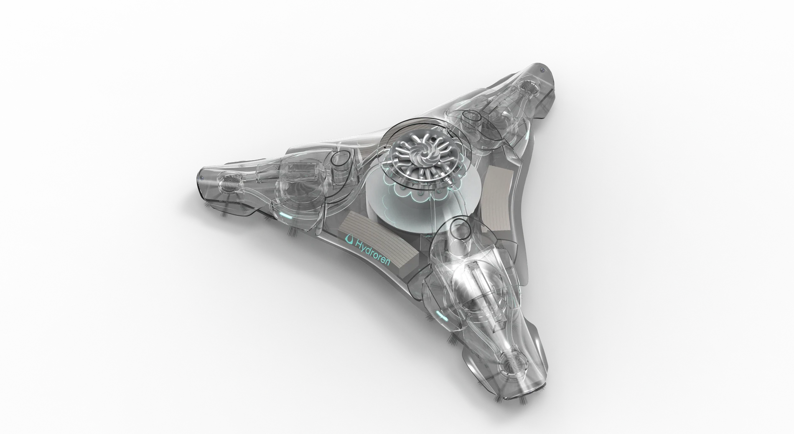
A central motor drives an impeller to draw water and debris into the robot. Instead of treating the outgoing flow as waste, internal channels redirect it toward secondary functions. Part of the flow rotates the cleaning brushes, while directional nozzles use the remaining jet to support movement and steering.
This hydraulic architecture shaped both the internal layout and the outer form. The motor, particle chamber, flow paths, brushes, and nozzles had to operate as one continuous system rather than as isolated features.
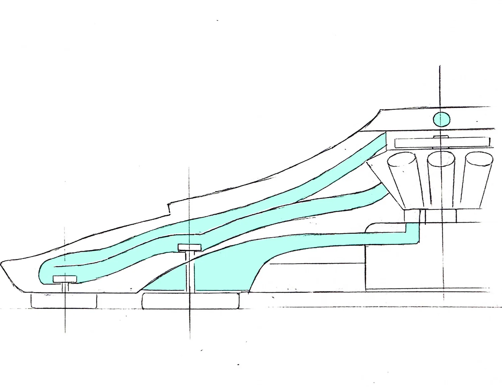
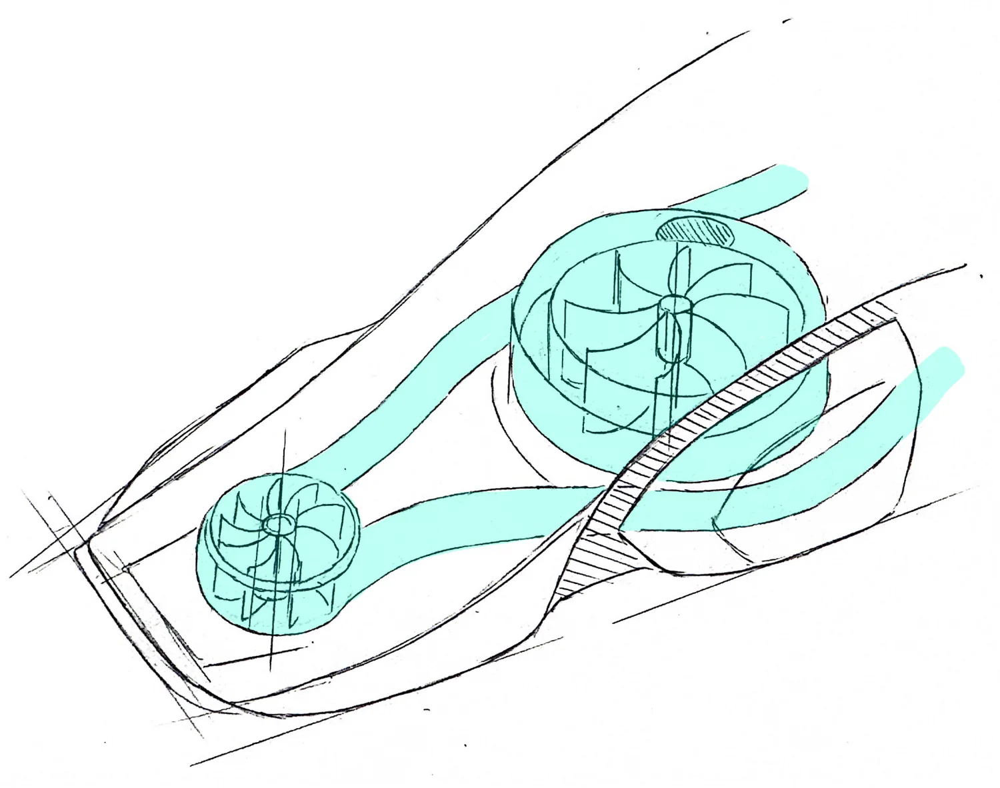
03
Separating debris
before the filter
A hydrocyclone offers a way to reduce repeated filter handling.
Inside Hydroren, water enters the separator tangentially and forms a vortex. Denser particles move outward and settle into the collection chamber, while cleaner water returns to the circulation path. The aim is to capture common pool debris before it reaches a dense filter and reduce the amount of material staff need to rinse away after each cycle.
The mechanism was explored through flow simulation and a transparent water-tank rig. These tests examined whether the vortex could establish a stable separation pattern and move visible particles into a dedicated chamber. They informed the direction of the design, but they do not represent the performance of a fully integrated production machine.
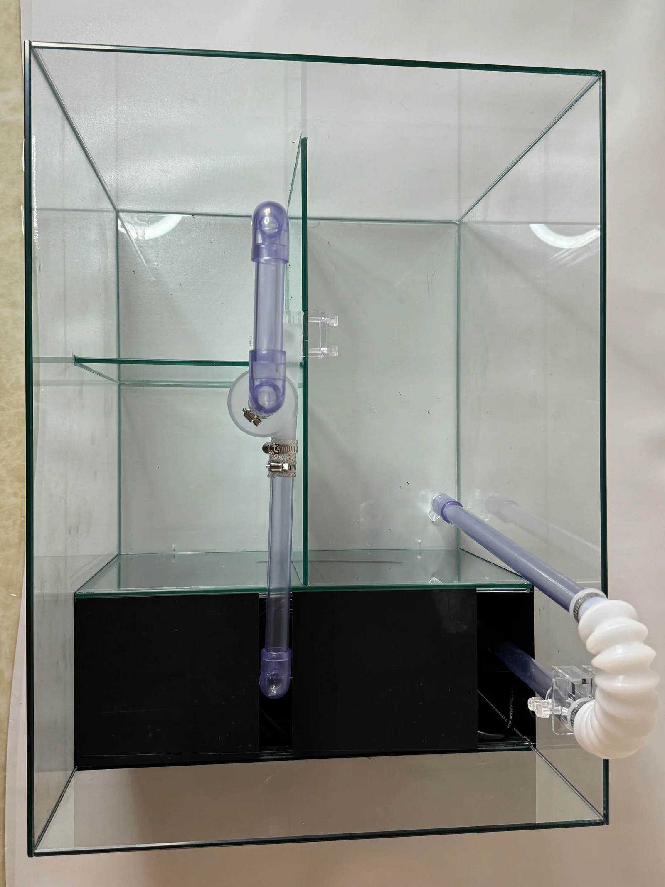
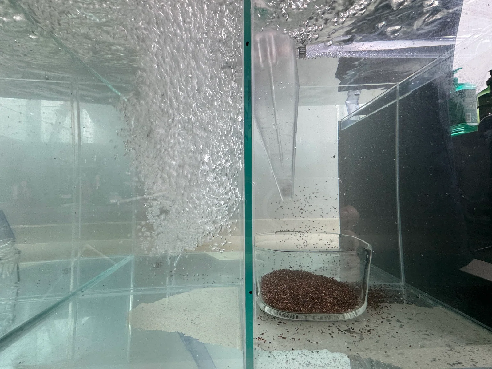
04
Form follows coverage,
flow, and handling
A low triangular body grew around the hydraulic layout and the geometry of the pool floor.
Early studies moved from conventional rectangular cleaners toward a three-point form. The broad, low body keeps the main volume close to the pool surface, while extended cleaning points approach walls and corners. A central volume houses the separator and display, with channels radiating toward the brushes and directional outlets.
Sketch models tested how the shell could protect the mechanism without appearing heavy or aggressive. The final form uses soft continuous surfaces to integrate the central chamber, removable cover, intake regions, and edge-cleaning elements into one recognisable object.
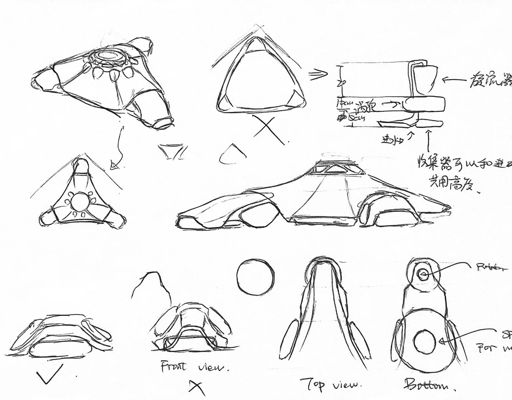
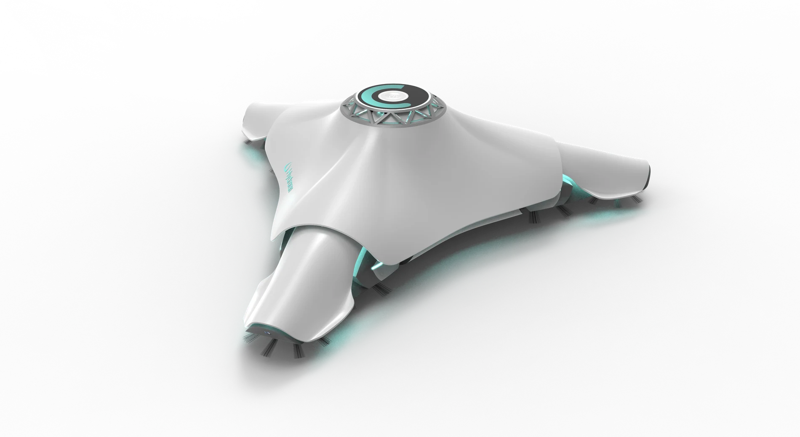
05
Working at night,
communicating by day
The charging dock connects the machine’s cleaning role with its public-facing role.
After the pool closes, a manager places Hydroren in the water. The robot follows a cleaning path, collects debris, and records the cycle while the pool is empty. In the morning, staff lift it out, open the cover, remove the collection chamber, and place the machine on its wall-mounted charging base.
Docking changes the meaning of the product. During cleaning, the circular display provides operational feedback such as progress and remaining charge. During opening hours, the same display presents a quieter summary of recent cleaning activity. Staff can check the machine at a glance, while swimmers receive a visible indication that maintenance has taken place.
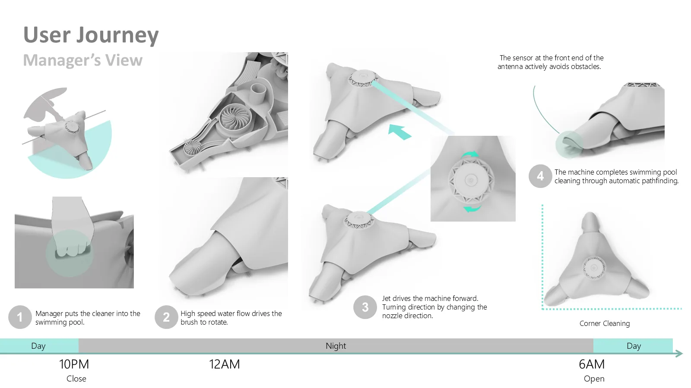
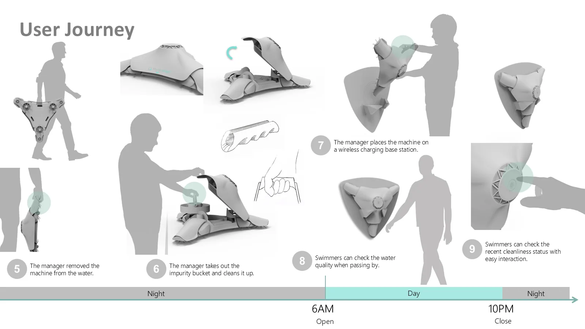
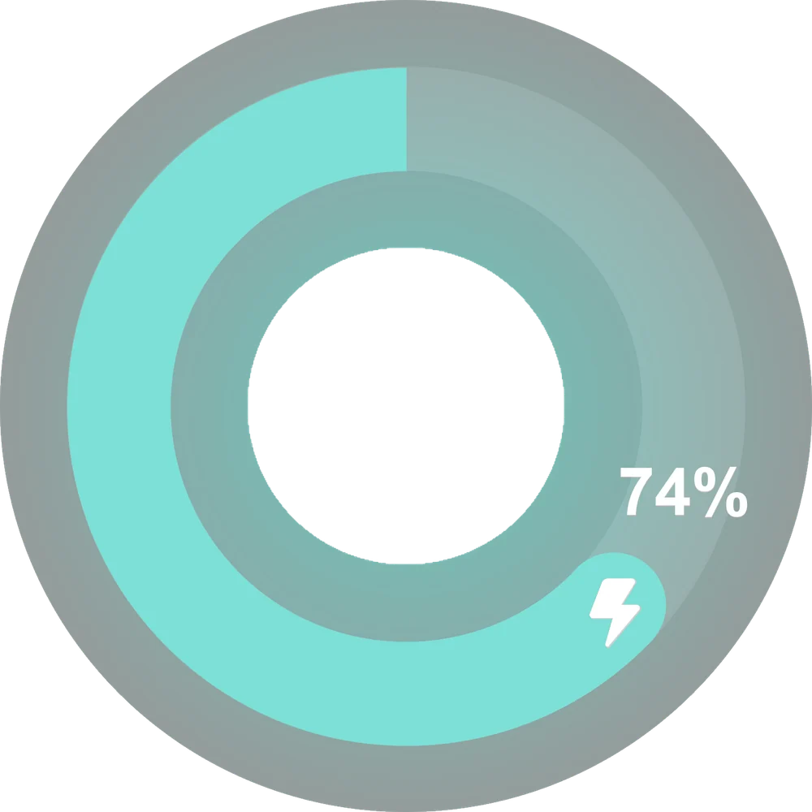
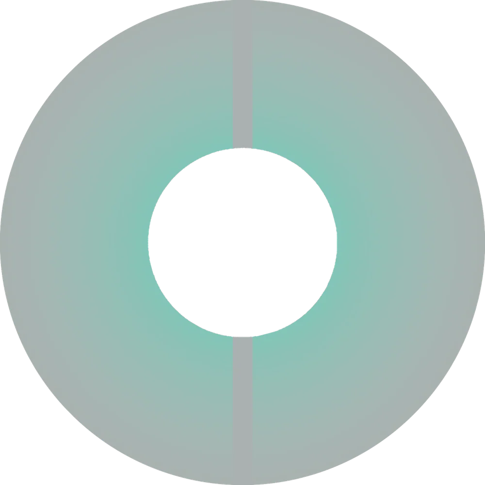
06
Testing form and mechanism
at different scales
Physical prototypes connected the visual concept with its internal system.
The project moved between CAD development, appearance models, mechanical studies, and hydraulic testing. A larger appearance prototype examined the product’s stance, surface transitions, lighting, and circular display. A smaller model explored how the robot could be stored and presented on its charging base.
Separate hydraulic tests focused on the most uncertain part of the proposal: particle separation. Together, these prototypes helped distinguish what could be demonstrated physically from what remained a system-level design direction.
Hydroren is not presented as a finished commercial cleaner. It is a design investigation into how robotic maintenance can use resources more deliberately and communicate its work more clearly.
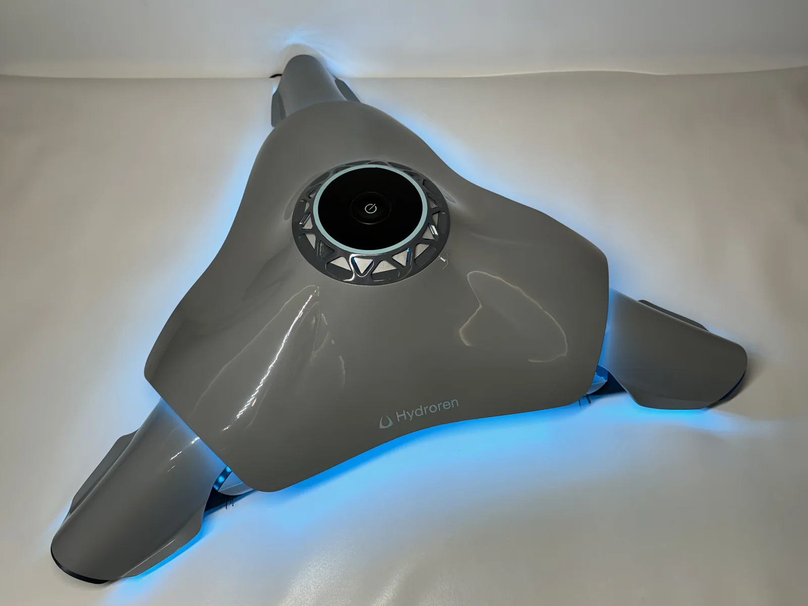
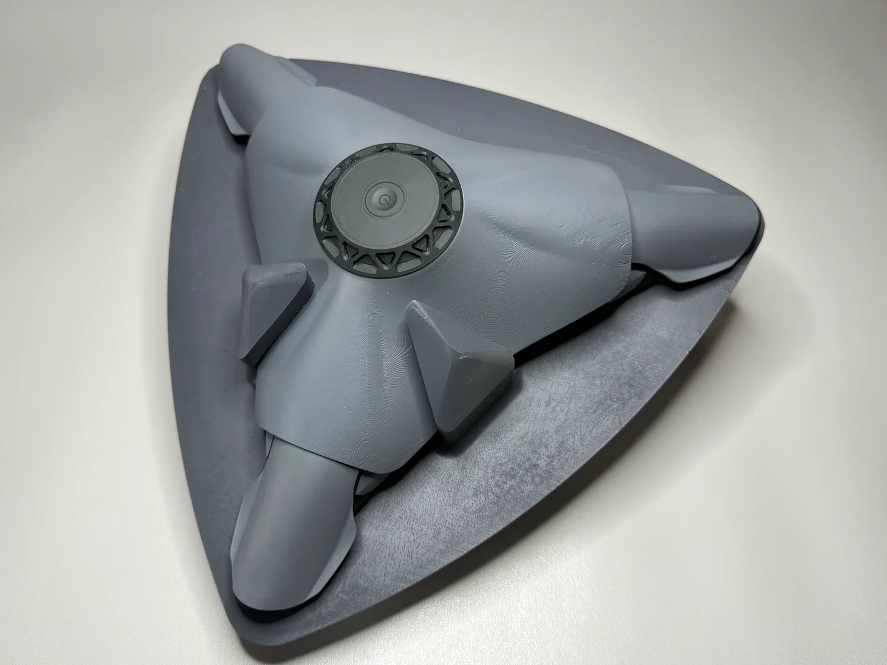
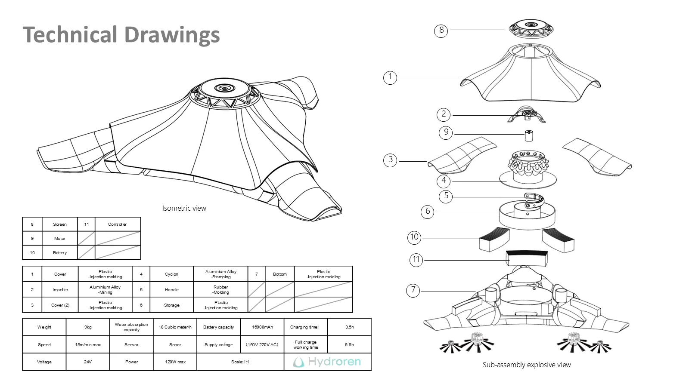
07
Maintenance becomes
part of the experience
A pool-cleaning robot can do more than disappear after the work is complete.
Hydroren connects underwater cleaning, daily staff routines, and public information in one product-service cycle. Its hydraulic architecture explores how a single flow of water can support several functions. Its dock and display extend the value of that work beyond the cleaning cycle by making maintenance visible when people return.
The project reframes sustainability as both a technical and communicative question: how a machine uses energy and water, and how clearly people can understand the work it performs.
Role: research framing, system concept, industrial design, hydraulic prototyping, interaction design, CAD development, model making, and visual communication.